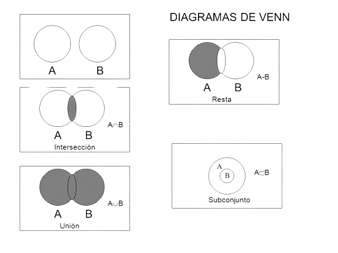

2.1.1 Principio aditivo Establece que la probabilidad de que ocurra al menos uno de dos eventos mutuamente
excluyentes es igual a la suma de las probabilidades individuales de cada evento. Se expresa matemáticamente como:
\(P(A o B) = P(A) + P(B)\)
Donde:
\(P(A o B)\): Probabilidad de que ocurra A o B.
\(P(A)\): Probabilidad de que ocurra A.
\(P(B)\): Probabilidad de que ocurra B.
2.1.2 Principio multiplicativo Establece que la probabilidad de que ocurran dos eventos independientes es
igual al producto de las probabilidades individuales de cada evento. Se expresa matemáticamente como:
\(P(A y B) = P(A) * P(B)\)
Donde:
\(P(A y B)\): Probabilidad de que ocurran A y B.
\(P(A)\): Probabilidad de que ocurra A.
\(P(B)\): Probabilidad de que ocurra B.
2.1.3 Notación Factorial La notación factorial se utiliza para representar el
producto de una secuencia de números enteros positivos consecutivos. Se escribe como:
\(n! = n * (n-1) * (n-2) * ... * 1\)
Donde:
\(n!\): Factorial de n.
\(n\): Número entero positivo.
2.1.4 Permutaciones Formas en que se pueden ordenar un conjunto de elementos sin importar
la repetición. Se calcula el número de permutaciones de n elementos utilizando la fórmula:
\(nPr = n! * (n-r)!\)
Donde:
\(nPr\): Permutaciones de n elementos tomados de r en r.
\(n\): Número total de elementos.
\(r\): Número de elementos que se toman.
2.1.5 Combinaciones Formas en que se pueden seleccionar un conjunto de elementos sin importar
el orden. Se calcula el número de combinaciones de n elementos tomados de r utilizando la fórmula:
\(nCr = \frac{n!}{(r! * (n-r)!)}\)
Donde:
\(nCr\): Combinaciones de n elementos tomados de r en r.
\(n\): Número total de elementos.
\(r\): Número de elementos que se toman.
2.1.6 Diagramas de Árbol Herramienta visual que se utiliza para representar las posibles combinaciones
de eventos y sus probabilidades. Cada rama del árbol representa un evento y la probabilidad de cada rama se indica junto a ella.
2.1.7 Teorema del Binomio
El teorema del binomio es una fórmula que se utiliza para expandir la potencia de un binomio (a + b).
2.2 Teoría elemental de probabilidad
2.3 Probabilidad de eventos
2.3.1 Definición de espacio muestral conjunto de todos los resultados posibles de un experimento aleatorio (Se representa con la letra S).
2.3.1 Definición de evento Es cualquier subconjunto del espacio muestral. En otras palabras, es un grupo de resultados específicos dentro del experimento aleatorio.
2.3.1 Simbología.
A, B, C son conjuntos.
a, b, c son elementos de los conjuntos.
U es la unión de conjuntos.
∩ es la intersección de conjuntos.
Aᶜ es el complemento de un conjunto.
2.3.1 Unión Representa la combinación de dos o más eventos. Se escribe A ∪ B, donde A y B son los eventos, y significa que el resultado puede ser A o B o ambos.
2.3.1 Intersección Representa la ocurrencia simultánea de dos o más eventos. Se escribe A ∩ B, donde A y B son los eventos, y significa que el resultado debe ser A y B a la vez.
2.3.1 Diagramas de Venn Son representaciones gráficas que utilizan círculos o figuras para mostrar las relaciones entre eventos. Cada figura
representa un evento, y la superposición de las figuras indica la intersección de los eventos.

2.4 Probabilidad con Técnicas de conteo
Axiomas
Axioma de No Negatividad La probabilidad de cualquier evento A es siempre un número no negativo, es decir, \(P(A) ≥ 0\).
Axioma de Normalización: La probabilidad del espacio muestral S, que es el conjunto de todos los resultados posibles de un experimento, es siempre igual a 1, es decir, \(P(S) = 1\).
Axioma de Aditividad para Eventos Mutuamente Exclusivos: La probabilidad de la unión de dos o más eventos mutuamente excluyentes es igual a la suma de sus probabilidades individuales. Si A y B son eventos mutuamente excluyentes, entonces \(P(A ∪ B) = P(A) + P(B)\).
Teoremas
Teorema de la Complementación La probabilidad del complemento de un evento A, denotado como A^c, es igual a 1 menos la probabilidad de A, es decir, \(P(A^c) = 1 - P(A)\).
Teorema de la Probabilidad Total Si A es un evento y B1, B2, ..., Bn son eventos mutuamente excluyentes que forman una partición completa del espacio muestral S, entonces la probabilidad de A es igual a la suma de las probabilidades de A dado cada uno de los eventos .
Teorema de Bayes El teorema de Bayes proporciona una fórmula para calcular la probabilidad condicional de un evento A dado que ha ocurrido otro evento B, donde \(P(B) > 0\).
2.5 Probabilidad condicional
Dependiente Dos eventos se consideran dependientes si la ocurrencia de uno afecta la probabilidad del otro.
Independiente Dos eventos se consideran independientes si la ocurrencia de uno no afecta la probabilidad del otro.